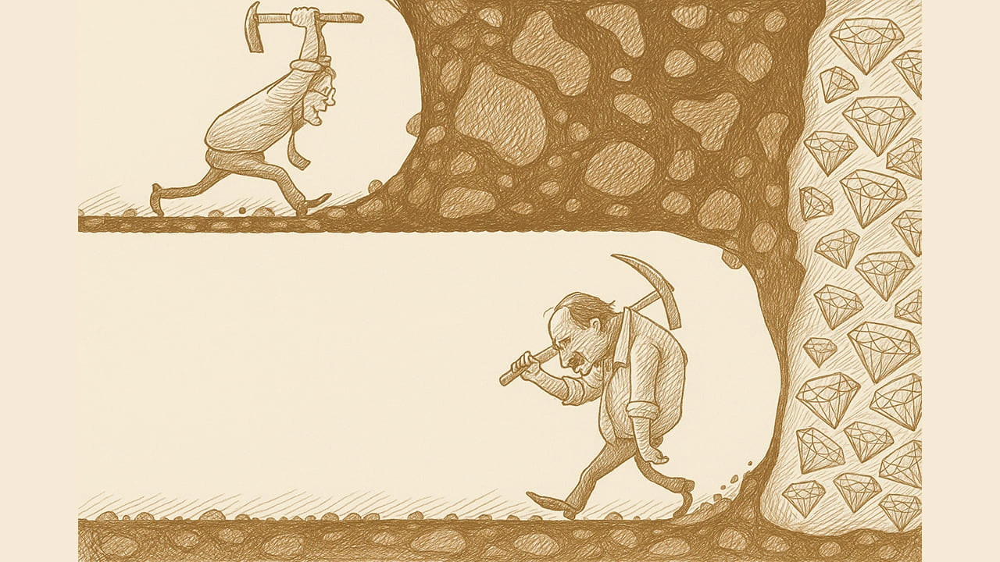

Analyzing financial statements is about understanding a company's current performance. Calculating 'intrinsic value,' on the other hand, is about figuring out what that company is actually worth.
In other words: 'First, you find a great company,' and 'Then, you calculate what it should be worth'.
What is Intrinsic Value?
The stock price you see on the news, online, or in your app—those numbers jumping all over the place during the trading day—that's the 'Market Price.'
'Intrinsic Value,' on the other hand, is the price that's hidden 'under the hood'—it's the number you have to dig for in the financial statements.
For a value investor, that is what the company is truly worth.
Judging When to Buy or Sell
ntrinsic value is the benchmark that value investors use to make their buy/sell decisions.
When the market price falls below the intrinsic value—meaning the stock is undervalued—that is your buying opportunity. You buy, hold for the long term, and wait for the market to realize its true value.
Conversely, if the price is above the intrinsic value, it's probably time to sell your position.
For example, let's say you calculate a company's intrinsic value is $100. If the stock is currently trading at $90, that's your green light to buy.
- Market Price < Intrinsic Value = Buy!
- Market Price > Intrinsic Value = Sell
Leave a 'Margin of Safety'
Before you learn valuation, you have to get one thing straight: There is no single, exact right answer.
Even using the same method, two people will come up with different results.
That's why you must leave yourself room for error to lower the risk of being wrong. This buffer is what we call the 'Margin of Safety.'
Let's say you calculate a company's intrinsic value is $100. If the stock is trading at $90, buying now seems logical... but you have to consider that your calculation might be wrong, or that 'stuff happens.'
So, you can apply a 20% to 40% margin of safety, meaning you wait until the price hits $60 to $80 before you buy.
This way, even if your judgment was off, you won't take a massive hit. On the flip side, if you were right, your potential upside is now that much greater.
How much of a margin to demand is entirely up to your own judgment and risk tolerance. The wider the margin, the harder it is to find a buying opportunity. The tighter the margin, the higher the risk.
- Low margin of safety: Buying opportunities are hard to come by, but risk is lower.
- High margin of safety: Buying opportunities are easy to find, but risk is higher.

Common Ways to Calculate Intrinsic Value
Even when looking at the same company, different value investors might approach it from various angles and use different calculation methods, ultimately arriving at different valuations.
For instance, Investor A might see a company as a growth stock, while Investor B views it as a cash-generating machine. Therefore, Investor A might use the P/E ratio for valuation, while Investor B might use the Free Cash Flow yield to back-calculate a fair price. Apple is a great example of a business that excels in both areas.
P/E Ratio (Price-to-Earnings Ratio)
This is a go-to for growth stocks and probably the most common valuation method out there. The original idea behind the P/E ratio was to figure out how long it would take to make your money back. The P/E multiple simply represents the number of years of earnings needed to match the stock price.
Of course, this isn't a super precise estimate since there are a lot of moving parts. But nowadays, most people just use it as a unit of measurement, like when you hear, "Experts believe Company ABC is worth a 20x P/E multiple..."
The P/E ratio is often used to compare a company against its own historical P/E range and against its competitors. This helps determine if the current price is relatively expensive or cheap by judging its "relative standing." Finally, you just multiply the P/E multiple you think is reasonable by the company's EPS to get an estimated intrinsic value.
P/B Ratio (Price-to-Book Ratio)
This is a less mainstream approach, generally used for asset-heavy stocks or companies with minimal growth prospects.
Book value is just assets minus liabilities, which is the same as shareholders' equity on the balance sheet. To get the book value per share, you divide shareholders' equity by the number of outstanding shares. Then, divide the stock price by the book value per share, and you've got the P/B ratio.
Based on that calculation, the P/B ratio tells you how much in company assets you're buying for every $1 you spend. If you find a stock with a low P/B ratio, it often means the company's assets (like land, factories, etc.) are quite valuable, but its stock price is depressed. This situation often pops up in older, established companies that aren't growing much but have a lot of assets on their books.
To get the intrinsic value, you multiply the P/B ratio you believe is "reasonable" by the book value per share.
DCF (Discounted Cash Flow)
This method is ideal for companies with stable operations that consistently generate positive cash flow. From Warren Buffett's perspective, intrinsic value is the total cash flow a business can generate in its lifetime. This method involves estimating all future cash flows (e.g., for the next 'N' years) and "discounting" them back to their present value to account for inflation and the time value of money.
Back-calculating from Dividend Yield
This is a good fit for stable companies that consistently pay out cash dividends and is generally considered one of the most conservative investment methods. At its core, buying a stock means investing in a company to share in its profits. Investors get their returns from the company's earnings in the form of cash dividends or stock dividends, growing alongside the company.
Because of this, the dividend yield can also be used to work backward to a valuation. You start by estimating the potential cash dividend for the year based on projected earnings, plug in the typical historical yield for that stock, and you can calculate a target price range that you'd be comfortable paying.
Other Ways for Calculating Intrinsic Value
Of course, there are other ways to calculate intrinsic value, which I'll introduce later on. This will help investors choose the right method for their analysis based on their own needs and market conditions, and also practice looking at the same thing from different angles.